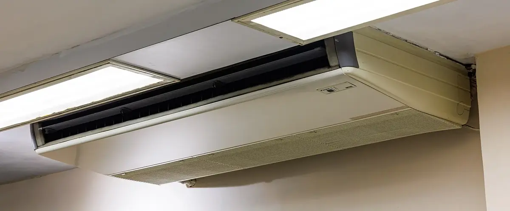
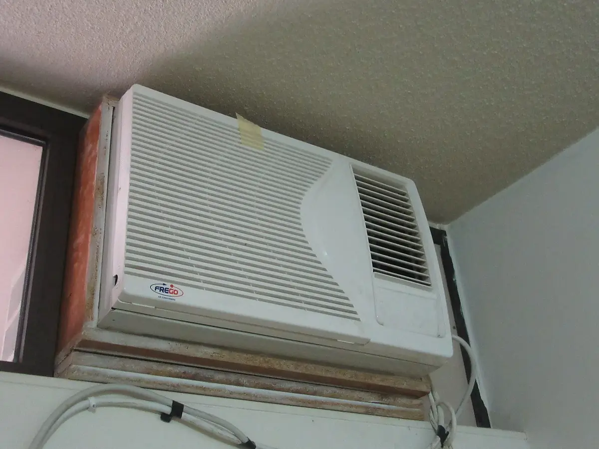
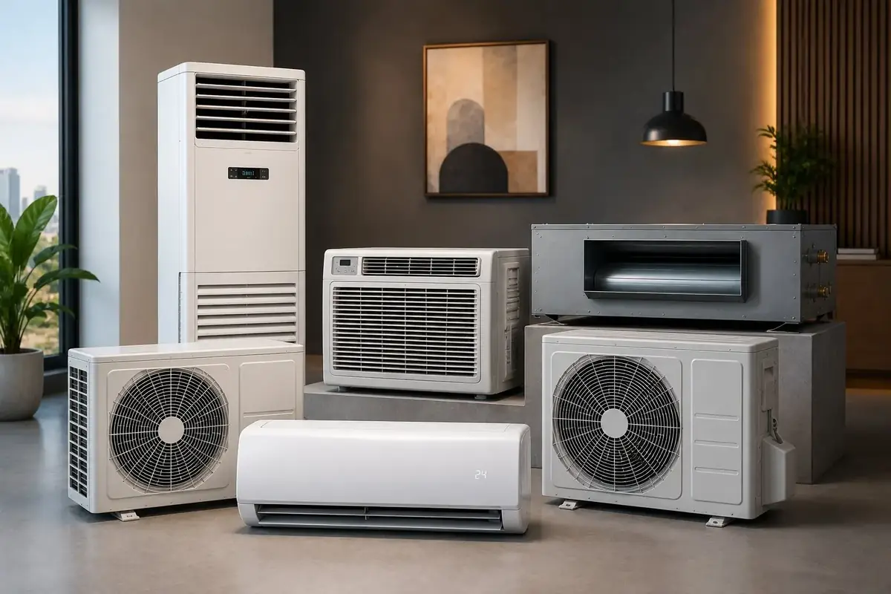
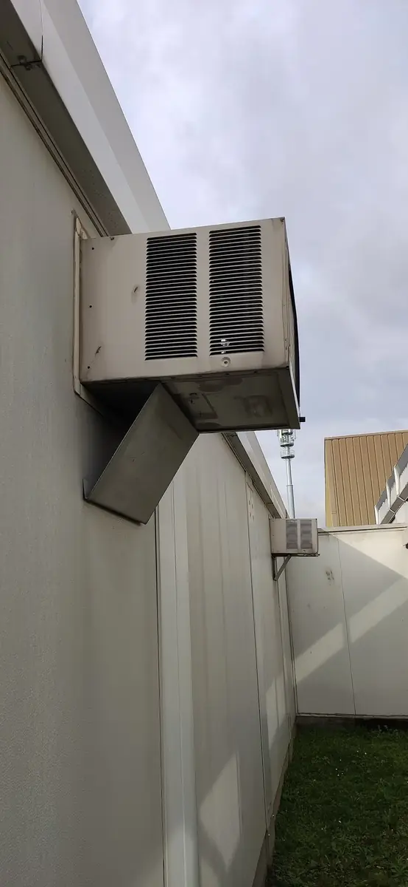
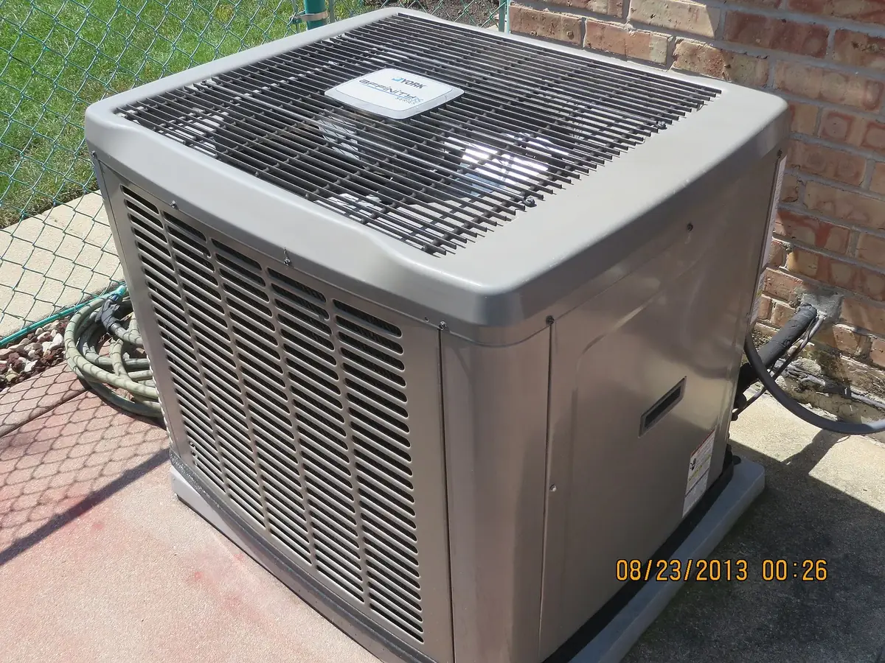
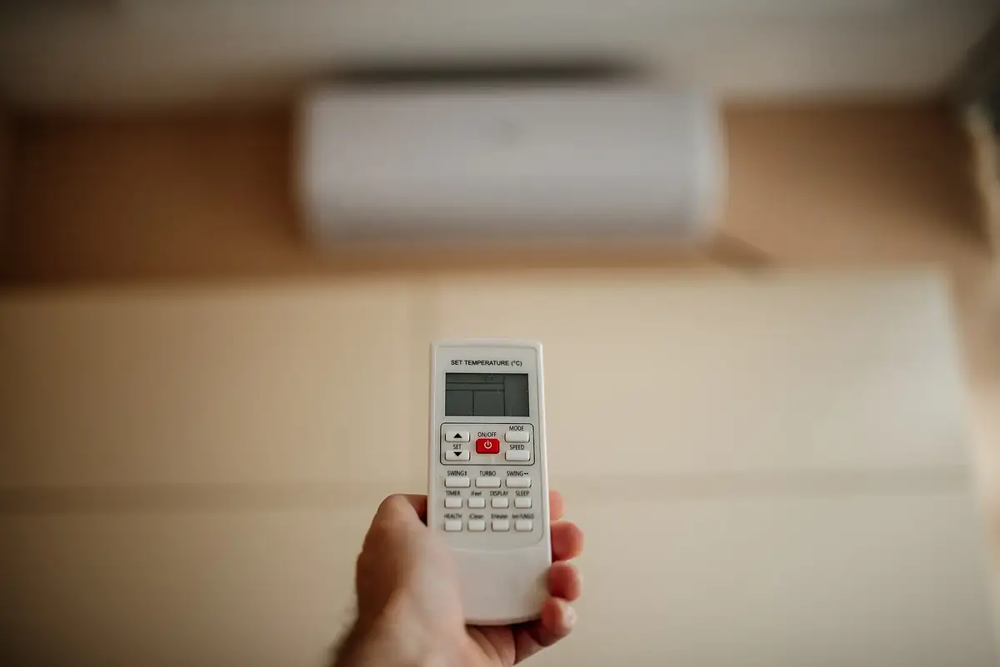

إزاي تختار مكيف سبليت مستعمل بدون مفاجآت؟
ابدأ بسعة التبريد المناسبة لمساحة الغرفة، وافحص صوت الوحدة الداخلية، قوة الهواء، ونظافة المواسير. في الصقر بنراجع التبريد، الفريون، التسريب، والحالة الخارجية قبل عرض أي جهاز للبيع.

خدمة فورية داخل الرياض
نشتري مكيفك بسعر عادل بدون بخس، ونوفر مكيفات مستعملة مفحوصة، وننفذ الفك والتركيب والصيانة والتنظيف باحترافية عالية وضمان واضح.
دليل الصقر
محتوى سريع يساعد الزائر يفهم الأنواع، الفحص، والصيانة قبل ما يطلب معاينة أو يختار مكيف مناسب للمكان.

ابدأ بسعة التبريد المناسبة لمساحة الغرفة، وافحص صوت الوحدة الداخلية، قوة الهواء، ونظافة المواسير. في الصقر بنراجع التبريد، الفريون، التسريب، والحالة الخارجية قبل عرض أي جهاز للبيع.

ضعف الهواء، رائحة غير مريحة، تسريب ماء، أو ارتفاع استهلاك الكهرباء كلها مؤشرات مهمة. التنظيف العميق للفلاتر والمبخر والمكثف يرجع كفاءة التبريد ويطول عمر الجهاز.

السبليت مناسب للغرف والصالات بهدوء وشكل أفضل، الشباك اقتصادي وسهل التركيب، والمركزي يخدم المساحات الكبيرة. الاختيار الصح يعتمد على المساحة، الميزانية، وطبيعة الاستخدام اليومي.
مقالات تكييفات مستعملة بالرياض
قبل ما تعرض مكيفك للبيع، جهز بيانات مهمة مثل نوع المكيف، السعة، العمر التقريبي، حالة التبريد، وهل يحتاج فك أو نقل. التفاصيل دي تساعد فريق الصقر يديك تقييم أدق وسعر أوضح من أول تواصل.
أفضل وقت لبيع المكيف يكون قبل موسم الصيف أو في بداية الطلب العالي، لأن الأجهزة النظيفة والمفحوصة بتتحرك أسرع. لو المكيف شغال لكن محتاج تنظيف بسيط، المعاينة الفنية هتحدد هل التنظيف يرفع قيمته أو البيع بالحالة الحالية أفضل.
نصائح شراء المكيفات
صيانة التكييف
تنظيف الفلاتر والمبخر والمكثف بيقلل استهلاك الكهرباء، يحسن جودة الهواء، ويحافظ على قوة التبريد. الإهمال لفترة طويلة ممكن يخلي المكيف يشتغل وقت أطول عشان يوصل لنفس درجة البرودة.
خدمة داخل الرياض
لو هتنقل المكيف من بيت لبيت، أو تغير مكان الوحدة، أو تركب جهاز مستعمل جديد، الفني المختص يحافظ على النحاس والوصلات ويجرب التشغيل بعد التركيب. ده يقلل الأعطال ويحافظ على كفاءة الجهاز.
شراء مكيفات مستعملة بالرياض
تحديد سعر المكيف المستعمل مش بيكون على الاسم أو الشكل الخارجي فقط. الفريق بيبص على نوع الجهاز، السعة، عمر التشغيل، حالة الكمبروسر، قوة الهواء، نظافة الوحدة الداخلية والخارجية، وحالة النحاس والوصلات. لما تكون البيانات واضحة من البداية، التقييم بيكون أسرع والعميل يعرف هل الأفضل البيع الفوري أو الصيانة البسيطة قبل البيع.
لو عندك مكيف سبليت، شباك، أو مركزي وعايز تبيعه داخل الرياض، ابعت صورة الجهاز ومكانك ونوع الخدمة المطلوبة على واتساب. بنراجع التفاصيل ونرتب معاينة مناسبة، والهدف إن العميل يوصل لسعر عادل بدون انتظار طويل أو زيارات غير واضحة.
بيع مكيفات مستعملة مفحوصة
المكيف المستعمل الجيد لازم يكون واضح في أدائه قبل التركيب. عشان كده بنهتم بفحص التبريد، الصوت، ضغط الفريون، حالة الفلاتر، وعدم وجود تهريب ظاهر. الفحص يقلل المفاجآت ويخلي العميل يختار الجهاز المناسب للمساحة والميزانية وهو مطمئن.
لو العميل محتاج مكيف لغرفة نوم، صالة، مكتب، أو استراحة، الاختيار مش بس حسب السعر. لازم السعة تكون مناسبة للمساحة، ومكان الوحدة الخارجية يسمح بتهوية جيدة، والتركيب يتم بطريقة تحافظ على كفاءة الجهاز. وجود فني يراجع التفاصيل قبل الشراء يوفر وقت وتكلفة على المدى الطويل.
صيانة وتنظيف مكيفات بالرياض
ضعف التبريد، صوت غير معتاد، تسريب ماء، رائحة غير مريحة، أو ارتفاع استهلاك الكهرباء كلها علامات تستحق فحص سريع. التنظيف الدوري للفلاتر والمبخر والمكثف يساعد على رجوع الهواء البارد ويقلل الضغط على الجهاز، خصوصا قبل موسم الصيف في الرياض.
خدمة الصيانة المناسبة تبدأ بسؤال بسيط: هل المشكلة في التنظيف، الفريون، الكهرباء، أو التركيب؟ لما الفني يحدد السبب بدقة، الإصلاح بيكون أوضح وأسرع. تقدر ترسل تفاصيل المشكلة والحي على واتساب، ونرد عليك بخطوة مناسبة قبل الزيارة.
دليل شامل
شراء مكيف مستعمل في الرياض قرار يحتاج شوية تركيز، لأن الجو الحار يخلي المكيف جهاز أساسي في البيت أو المكتب أو الاستراحة. العميل غالبا يبحث عن سعر مناسب، لكن السعر وحده مش كفاية. المهم إن الجهاز يكون مناسب للمساحة، يعمل بتبريد ثابت، وما يكون فيه تهريب أو أعطال مخفية تظهر بعد التركيب. لذلك أفضل بداية هي تحديد نوع المكيف المطلوب: سبليت، شباك، مركزي، أو وحدة كبيرة للصالة. بعد تحديد النوع، يتم اختيار السعة المناسبة حسب مساحة الغرفة وطبيعة الاستخدام وعدد الأشخاص ومكان الوحدة الخارجية.
لو أنت تريد بيع مكيف مستعمل، جهز أهم المعلومات قبل التواصل: نوع الجهاز، الماركة، السعة، عمر الاستخدام التقريبي، هل المكيف شغال حاليا، هل يحتاج فك، وهل يوجد ريموت أو ملحقات. هذه التفاصيل تساعد فريق المعاينة على تقييم الجهاز بسرعة، وتساعدك تحصل على عرض واضح بدون تأخير. في كثير من الحالات، المكيف النظيف والمركب بشكل صحيح تكون قيمته أعلى من جهاز مهمل حتى لو كان نفس النوع والسعة. لذلك الفحص البسيط قبل البيع مهم، خصوصا لو المكيف كان متوقف فترة أو يحتاج تنظيف فلاتر.
الصقر تركز على خدمة شراء مكيفات مستعملة بالرياض بطريقة عملية: تواصل سريع، معاينة حسب الحالة، تسعير بناء على النوع والسعة والعمر، ثم الاتفاق على الفك والنقل عند الحاجة. هذا المسار يوفر على العميل عناء البحث عن فني منفصل أو نقل منفصل. كذلك عند شراء مكيف مستعمل من الشركة، يتم الاهتمام بفحص التبريد والصوت وحالة الوحدة الداخلية والخارجية، لأن الهدف أن يصل العميل لجهاز مناسب ويعرف حالته قبل الدفع والتركيب.
من أكثر الأخطاء المنتشرة أن العميل يشتري مكيف أكبر أو أصغر من احتياجه. المكيف الصغير يشتغل لفترات طويلة ولا يبرد المكان بالشكل المطلوب، والمكيف الكبير قد يستهلك طاقة أكثر من اللازم لو كان غير مناسب للمساحة. كذلك مكان التركيب مهم جدا؛ الوحدة الخارجية تحتاج تهوية جيدة، والوصلات تحتاج تركيب آمن يحافظ على النحاس ويقلل احتمالية التسريب. لذلك خدمة الفك والتركيب ليست خطوة جانبية، بل جزء أساسي من نجاح تجربة شراء أو نقل المكيف المستعمل.
أما الصيانة، فهي تحافظ على قيمة الجهاز وتطيل عمره. ضعف الهواء، رائحة غير مريحة، تسريب ماء، صوت عالي، أو ارتفاع فاتورة الكهرباء كلها علامات تستحق فحص. تنظيف الفلاتر والمبخر والمكثف يساعد على تحسين التبريد وتقليل الضغط على الكمبروسر. إذا كان المكيف يحتاج فريون، يجب كشف التهريب أولا بدل التعبئة العشوائية، لأن التعبئة بدون حل السبب قد تعيد المشكلة بعد فترة قصيرة. الفحص الصحيح يوفر فلوس ووقت، ويخلي العميل يعرف هل الإصلاح مجدي أو البيع والاستبدال أفضل.
في النهاية، أفضل طريقة للحصول على خدمة سريعة هي إرسال تفاصيل واضحة عبر واتساب: نوع المكيف، الحي داخل الرياض، هل الطلب بيع أو شراء أو صيانة، وصورة للجهاز إن أمكن. كلما كانت البيانات أوضح، كانت المعاينة أسرع والتسعير أدق. سواء كنت تبحث عن شراء مكيفات مستعملة بالرياض، أو تريد بيع مكيف سبليت أو شباك، أو تحتاج صيانة وتنظيف قبل الصيف، وجود فريق واحد يتعامل مع التقييم والفك والتركيب والنقل يجعل العملية أسهل وأكثر أمانا.
تواصل أسرع
اتصل مباشرة أو ابعت بياناتك على واتساب، وفريق الصقر يرتب معاك المعاينة أو الخدمة داخل الرياض.
سنة خبرة في الرياض
مكيف تم شراؤه وبيعه
متوسط سرعة الاستجابة
رضا العملاء
هوية الصقر
الشعار والألوان والصور كلها موجودة داخل المشروع، جاهزة للرفع والتعديل واستبدال الصور لاحقا بصوركم الحقيقية.


لماذا الصقر؟
نعامل المكيف المستعمل كأصل له قيمة. نعاين بدقة، نوضح الحالة، ونقدم سعرا منطقيا بلا مبالغة أو مساومة مرهقة. وفي البيع نقدم أجهزة مفحوصة ومهيأة للتركيب.
تقييم حسب النوع والعمر والحالة وسعة التبريد.
فك وتركيب آمن يحافظ على النحاس والوحدة.
اختبار بعد التركيب ومتابعة عند الحاجة.
آراء العملاء
باعوا لي مكيفين سبليت بحالة ممتازة، التركيب كان مرتب والسعر واضح من البداية.
اشترو مكيفات الاستراحة في نفس اليوم، المعاينة سريعة والدفع فوري.
صيانة وتنظيف ممتاز. رجع التبريد قوي والموعد كان دقيق.
شركاء وماركات نتعامل معها
أسئلة يبحث عنها العملاء
إجابات مختصرة عن أكثر الكلمات التي يبحث عنها العملاء قبل بيع أو شراء مكيف مستعمل داخل الرياض.
نعم، الصقر يشتري مكيفات مستعملة بالرياض من نوع سبليت وشباك ومركزي، مع معاينة واضحة وتقييم حسب الحالة والسعة والعمر وقوة التبريد.
أفضل سعر يعتمد على اختيار السعة المناسبة وفحص الجهاز قبل الشراء. نوفر مكيفات مستعملة مفحوصة ونوضح حالة التبريد والتركيب قبل الاتفاق.
نراجع حالة المكيف أولا. بعض المكيفات الخربانة لها قيمة حسب الكمبروسر والنحاس والوحدة الخارجية، لذلك نطلب صورة وتفاصيل الجهاز لتحديد السعر الأقرب.
اتصل على 0556800314 أو أرسل صورة المكيف والحي عبر واتساب، وسنرتب المعاينة أو الرد على طلب شراء مكيفات مستعملة بالرياض في أسرع وقت متاح.
روابط مهمة
روابط مباشرة تساعد الزائر وجوجل على الوصول لكل صفحات الموقع الأساسية.
صفحة متخصصة لبيع مكيفك المستعمل وطلب المعاينة داخل الرياض.
تعرف على الصقر وخبرتنا في شراء وبيع وصيانة المكيفات.
شراء، فك، تركيب، نقل، صيانة وتنظيف مكيفات داخل الرياض.
تصفح مكيفات سبليت وشباك ومركزي مفحوصة.
صور توضح أعمال التركيب والصيانة والمعاينة.
آراء العملاء في خدمة شراء وصيانة المكيفات بالرياض.
اتصل أو أرسل طلبك عبر واتساب بسرعة.